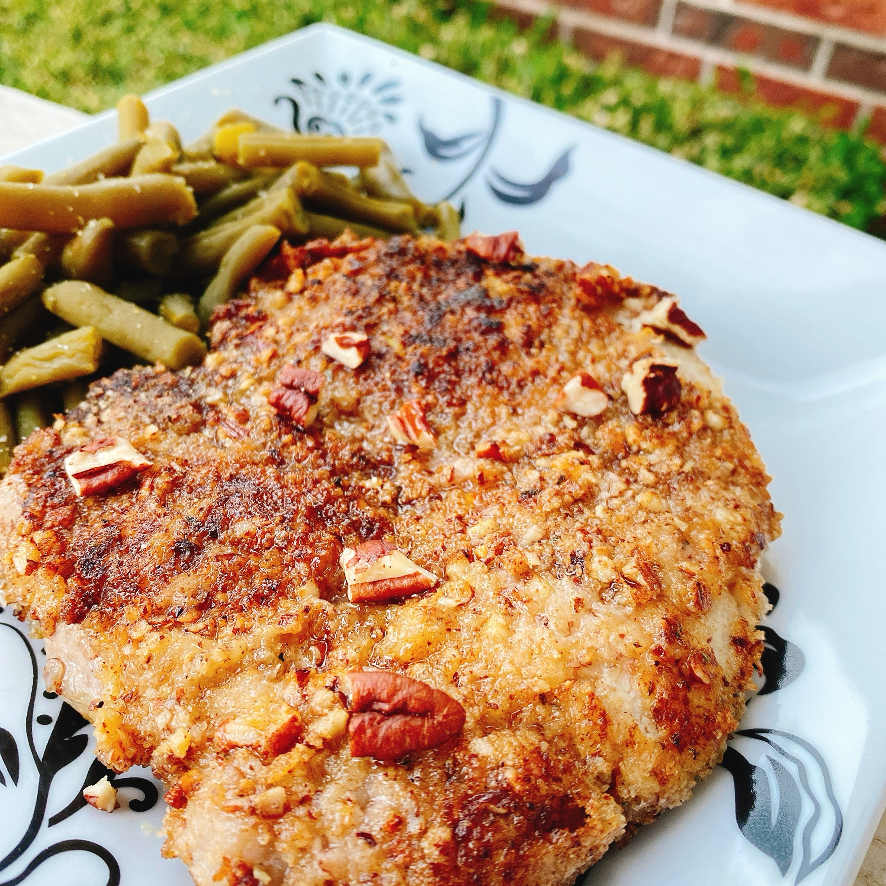

Elevate pork chops to the next level with these pork chops which take little time and are company worthy. Just
be careful when cooking because the pecans can burn rather fast.
Learn how to make the best Pecan Pork Chops.
Ingredients
- 1 cup pecans
- ½ cup panko bread crumbs
- 2 tablespoons cornstarch
- 2 pounds thick-cut pork chops
- ½ teaspoon Italian seasoning
- ½ teaspoon garlic salt
- ½ teaspoon ground black pepper
- 1 tablespoon Dijon mustard
- 1 tablespoon honey
- 2 tablespoons unsalted butter
- 2 tablespoons canola oil
Steps
-
Pulse pecans in a food processor until they resemble crumbs. Transfer to a shallow dish; add panko and
cornstarch. Stir to blend.
- Season pork chops with Italian seasoning, garlic salt, and pepper. Coat both sides with Dijon mustard
and honey. Add pork chops to the pecan mixture, one at a time, pressing with your fingertips to help the
coating stick. Shake off any excess and transfer to a lined baking sheet.
- Preheat a large saute pan over medium heat for 2 to 3 minutes. Place butter and oil in the pan, then add
pork. Cook for 4 to 5 minutes per side. An instant-read thermometer inserted into the center should read
145 degrees F (63 degrees C) for medium. Let rest for 5 minutes before serving.
Top
Main